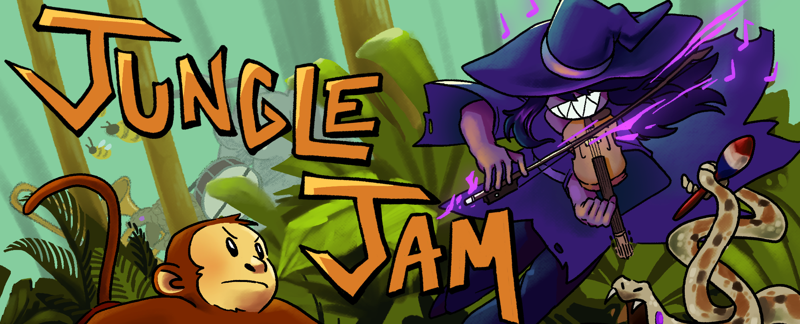
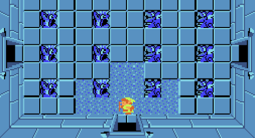

Jungle Jam
Video Game Development CapstoneA rhythm roguelike created within 7 weeks as the final project for EECS 494. Created on a team of 4 students, we followed the agile development process, taking feedback from playtests and iterating on our design week by week. I worked on base enemy implementation, effects, and visuals.
Created with Unity and C#. Art created in Clip Studio Paint.


Zelda NES Recreation
EECS 494 Project 1A recreation of Dungeon 1 in the first Zelda game for the NES and a custom level with a new mechanic. For this project, I worked primarily on implementing the enemies in the dungeon, including their movement and attack logic. I also designed the two puzzles at the end of the custom level to showcase how the mechanic could be used to change the gameplay of Zelda, as well as implementing logic and modifying sprites for the step attack.
Created with Unity and C#.

Color Run
EECS 494 Project 2A two week rapid prototype focusing on implementing a key mechanic and the necessary player guidance.
Created with Unity and C#.

Masqoulerade
Global Game Jam 2026Created for the 2026 Global Game Jam following the theme, "Mask." The game takes inspiration from games like "Phoenix Springs" and "Blue Prince" in terms of style and gameplay.